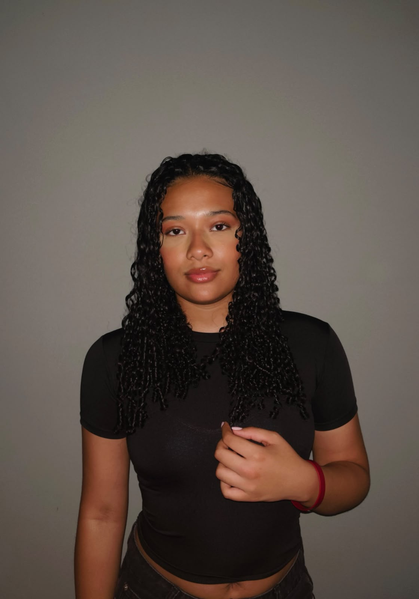

Quem é aAna Clara?
A Ana Clara é uma mulher de 21 anos que, desde pequena, sonhou alto. Mesmo não tendo recursos, sentia que tudo que ela sonhava em conquistar tinha um pedaço dela. Com tantos sonhos, ela escolheu seguir seu lado artístico e começou a fazer Design de Moda na Universidade do Senac. Porém, isso não surgiu do nada. Desde sempre, ela gostava de desenhar, mexer com tinta e criar. Sempre se esforçava para tirar nota máxima em Artes na escola, porque era algo que ela gostava muito.
Hoje em dia, ela está conhecendo mais esse mundo da moda e se apaixonando por vários caminhos que envolvem a moda. E está disposta a conhecer e aprender ainda mais o seu conhecimento, trabalhando em um lugar que te faça crescer.

Cada escolha
fica visível.
Antes da peça pronta, existem medidas, linhas, tecido, volume e revisão. Os registros a seguir acompanham essas etapas sem esconder o trabalho que existe entre elas.
O desenho se divide em partes, curvas e marcações.
O tecido revela no manequim aquilo que o papel ainda não mostra.
A peça piloto permite observar encaixe, proporção e acabamento.